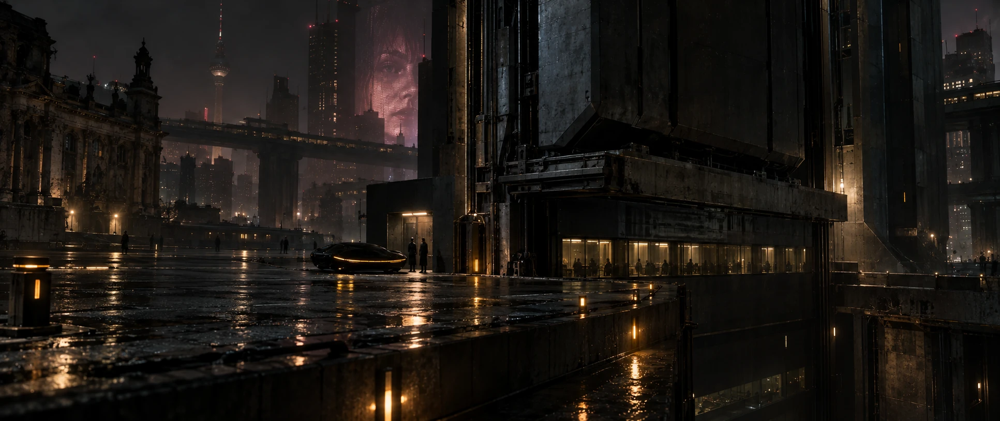
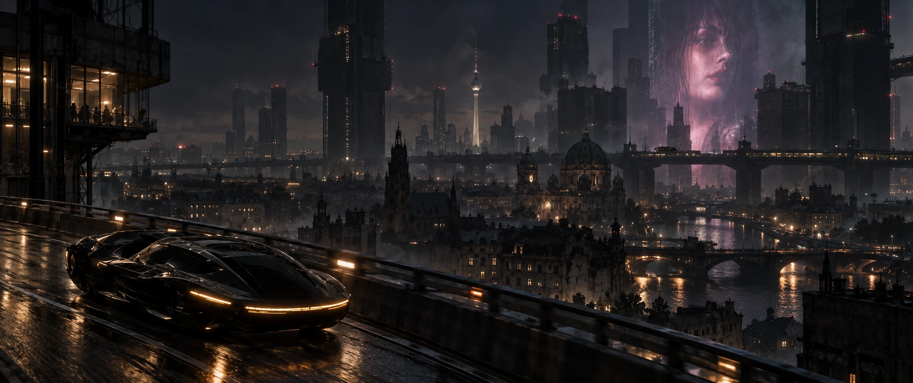
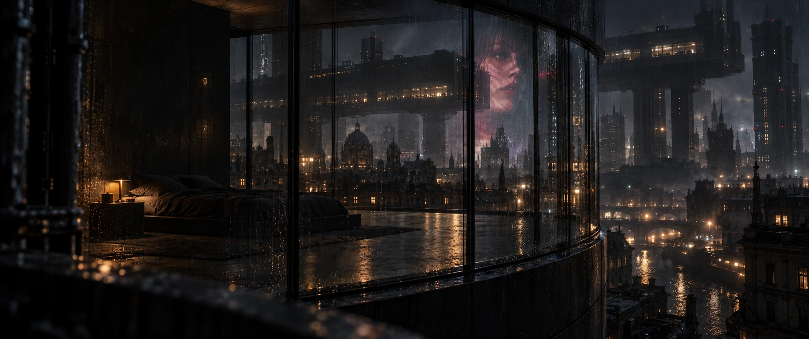
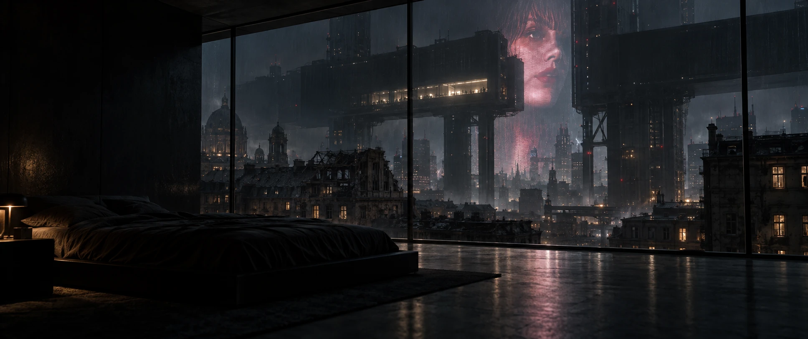
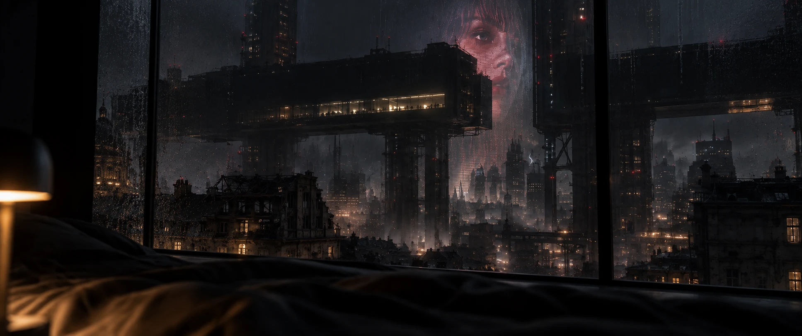
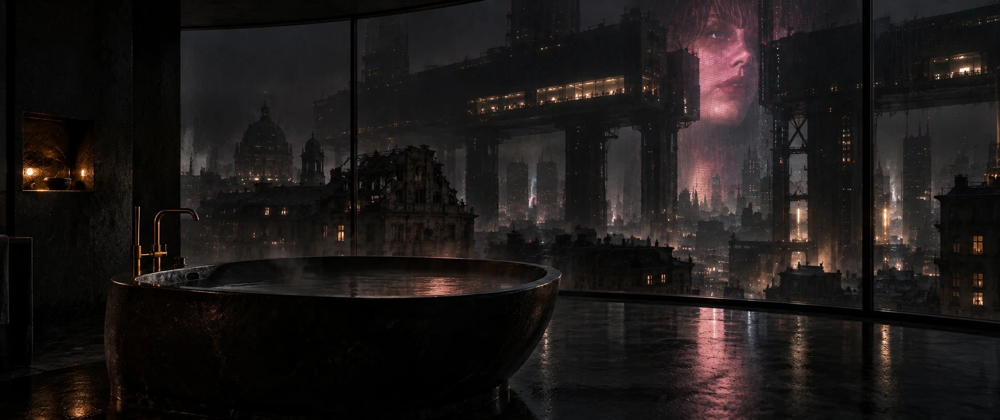
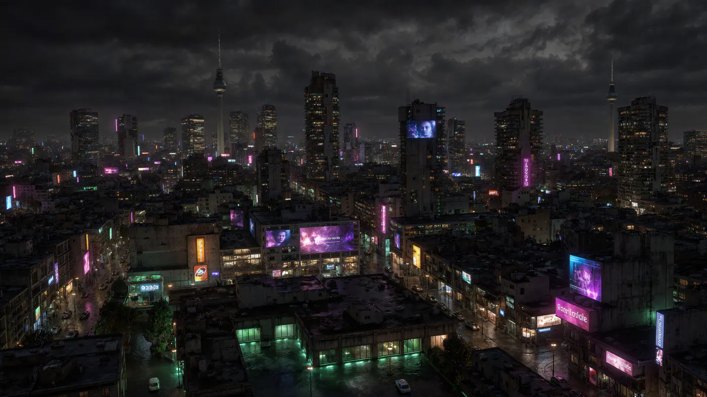
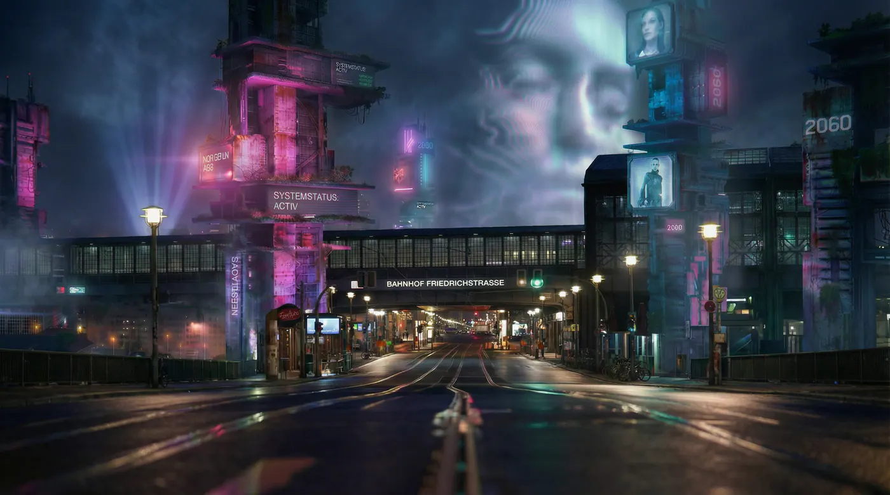

After the Collapse
An imagined Berlin after World War III. Damaged infrastructure and people rebuilding their lives.

01 / After the Collapse
City Studies
Lonely streets, exposed infrastructure and private refuges after the collapse.







Research & world notes
After the Collapse imagines Berlin after World War III, where damaged infrastructure and human life persist unevenly. Some machines continue the routines of a society that can no longer fully inhabit them. Transport, maintenance and artificial light survive in fragments. Their persistence raises a question: what is being preserved when the systems of a civilisation outlast the meanings that once sustained it?
Protection reorganises the city. Access to clean air, shelter and functioning infrastructure shapes who can remain, who must move and who becomes dependent on the systems that keep them alive. Masks and enclosed spaces express this fragile relationship between the body and its surroundings. Survival carries a political question: who decides the conditions under which another person may live?
Memory becomes contested ground. Preserving the old world can carry its violence and hierarchies into the next; erasing it can destroy the knowledge needed to recognise their return. Architecture, photographs, records and worn materials hold traces of lives that official systems cannot fully account for. Rebuilding means deciding what deserves continuity, and what must be allowed to end.
Within this uncertainty, rave, private rituals and physical intimacy acquire another weight. A room where people dance together can become a temporary sanctuary. Touch and unrecorded encounters preserve experiences that resist prediction and measurement. Desire remains difficult to justify through usefulness, yet it gives people a reason to seek one another beyond the demands of survival.
Parallel Vision approaches this Berlin through the unresolved relationship between continuity and transformation. A city can keep running while the possibility of a shared life diminishes. What would it mean to rebuild a world in which being alive also means being able to remember, to refuse, to care and to love?
Part of Berlin 2063 and Beyond, explored through images, film, sound and material studies.